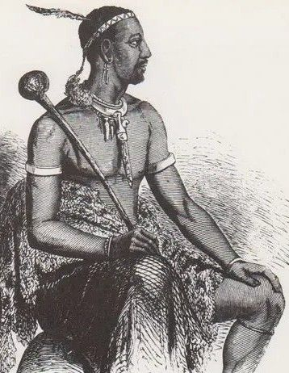

The Moshoeshoe Day Cultural Celebration is a tourism and cultural event that honours King Moshoeshoe I, the founder of the Basotho nation. The event celebrates the history, traditions, and cultural identity of the Basotho people.

The celebration will take place at Khutsong Lodge in Maseru and will feature traditional music, cultural dances, storytelling, and local Basotho cuisine. The event aims to attract both local and international tourists who are interested in learning about Basotho heritage.
Our vision is to promote Lesotho as a cultural tourism destination by celebrating the legacy of King Moshoeshoe I and preserving Basotho traditions for future generations.
Our mission is to organize a memorable cultural event that promotes Basotho heritage, encourages tourism development, and brings together local communities, visitors, and cultural performers.
© 2026 Moshoeshoe Day Cultural Celebration. All rights reserved. This website and its content are created for educational purposes and to promote the Moshoeshoe Day tourism event in Lesotho.